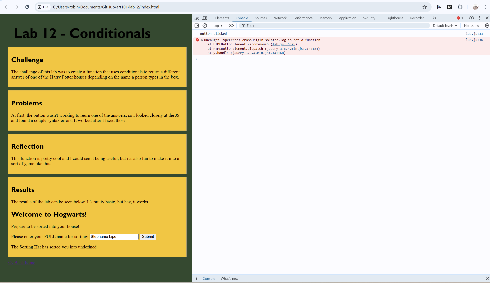
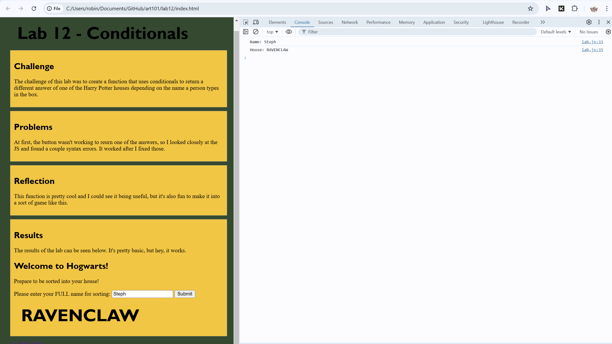
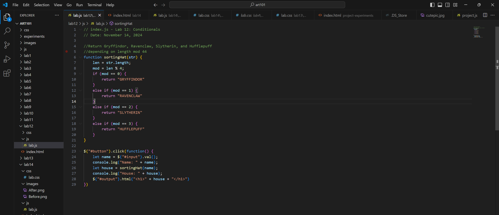

Lab 14 - Debugging Tools & Strategies
Challenge
The challenge of this lab was to use the console to fix bugs from other labs.
Problems
My lab 12 wasn't working to sort out full names, it would just say undefined, so I had to look at the console to see what was wrong. It said that the crossOriginIsolated.log was the problem so I changed it to console.log.
Results
My lab works correctly now!


Debugging
Below is the working code for the lab. In addition to having to change crossOriginIsolated.log to console.log, I also apparently had a syntax error. For the "else if (mod == 3) { return "HUFFLEPUFF" }"" part, I had (mod ==2), so that made it unable to return both Slytherin and Hufflepuff. I noticed that just by looking at the code quickly though and fixed it.
